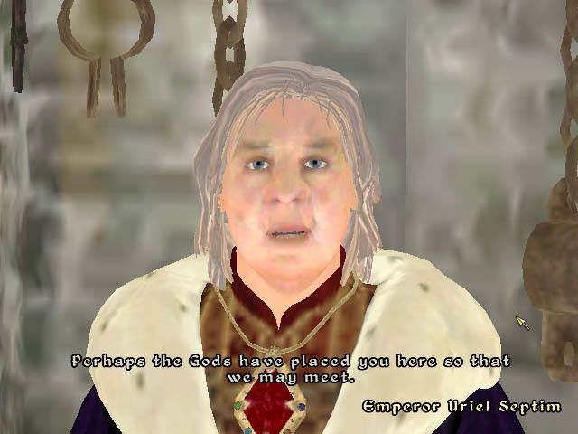

#14975 1 2007-04-25T02:05:45Z Sniperwhere OK. I got TES4 Oblivion not too long ago and am addicted to this game like you wouldn't believe. This message board is kinda a discussion board. if anyone has something about the game they want to say, please say it. Things like custom classes and quest trouble and so on...(Oh, and anyone who can tell me how to take screen shots that would be greatly appreciated)

PLEASE DO NOT POST USER DIRECTED INSULTS AND ANYTHING NOT RELATED TO THIS TOPIC!
(Other Elder Scrolls games count as on topic)
#315662 2 2007-04-25T02:38:00Z Twistkill PLEASE DO NOT POST INSULTS AND ANYTHING NOT RELATED TO THIS TOPIC! IF YOU DON'T LIKE THE GAME, WE DON'T NEED TO KNOW! 
I agree with the off-topic request... We surely don't want this thread to end up as a discussion of tomatoes, leather sofas, or sheep, but if someone has played the game and disliked it greatly or even just a little bit, you cannot force them to not have an opinion of it. Just a heads-up.
#315666 3 2007-04-25T02:48:48Z Sniperwhere I know I know. I just don't want this forum clogged with insults. I started it so people could talk about the game. Not complain about it. Besides i hear enough complaining during the day.

#315691 4 2007-04-25T04:33:10Z Atilla Does anyone know why many Khajiiti NPCs wear earrings, but your character cannot do so without the assistance of mods?
Also, I'd avoid trying to censor people who do not share your liking for something.
Just look at this thread...#315697 5 2007-04-25T04:57:05Z Tsukatu No, no, it's alright, let him have a thread that makes him feel like it's open discussion when it's really "only post here if you're as obsessed with Oblivion as I am." I know that a lot of people simply can't take any criticism, but it's not my job to force criticism onto them.
#315706 6 2007-04-25T05:04:44Z Sniperwhere Okay. You win. If you have a complaint about the game, say it.
#315759 7 2007-04-25T14:42:26Z Luminaflare one complaint: too system hungry for my PC ;_;
i do find the game very fun though just it lags too much on my pc which is not fun. Flare=fun
my custom class is an archer/mage
screenshots: look for the print screen key on your keyboard, press it, open paint, paste. (works with anything as long as it isn't an overlay)
#315771 8 2007-04-25T17:34:15Z Sniperwhere That is a problem. I keep my settings on medium and when i play the game i always turn of the grass. Grass creates serious laggy.(to turn of the grass just press "`" and type in "tg") Oh and I had just figured out the screenshot thing. You have to edit the oblivion.ini file and change the allowscreenshots part to 1. else it wont work. not even pasting it in paint. i've tried.
http://planetelderscrolls.gamespy.com/
http://www.elderscrolls.com/home/home.htm#315815 9 2007-04-25T20:41:00Z LittleViking Oblivion doesn't look as good as they promised it would. :(

My game does look better than this now, though, thanks to the
Oldblivion mod. If you don't have a DirectX 9 video card, Oldblivion is a must. (I mean, literally a must. Even the bare minimum graphic settings use DX9 shaders which lagged my machine to the point of being unplayable. Oldblivion converts these shaders to DX8 which will run on older hardware.)
#315828 10 2007-04-25T21:01:56Z smartalco i have played it a bit at a friends house, wish i had the PC for it...
sorta on topic, also playing at a friends my custom class in Morrowind was 'Awesome'

#315919 11 2007-04-26T02:17:53Z Tsukatu I basically hate this game, and think it's extraordinarily overrated.
(Here it comes... "durr... hav u plade it??")
#315993 12 2007-04-26T18:53:21Z Luminaflare Oblivion doesn't look as good as they promised it would. 
<image>
My game does look better than this now, though, thanks to the Oldblivion mod. If you don't have a DirectX 9 video card, Oldblivion is a must. (I mean, literally a must. Even the bare minimum graphic settings use DX9 shaders which lagged my machine to the point of being unplayable. Oldblivion converts these shaders to DX8 which will run on older hardware.)
wait does this reduce the system requirments so that i can like play it on my pc?!?!?
#316557 13 2007-04-28T21:59:33Z LittleViking Oblivion doesn't look as good as they promised it would.
<image>
My game does look better than this now, though, thanks to the Oldblivion mod. If you don't have a DirectX 9 video card, Oldblivion is a must. (I mean, literally a must. Even the bare minimum graphic settings use DX9 shaders which lagged my machine to the point of being unplayable. Oldblivion converts these shaders to DX8 which will run on older hardware.)
wait does this reduce the system requirments so that i can like play it on my pc?!?!?
Probably, yes. If you could run Morrowind, you can run Oldblivion. The worst that would happen is that you'd lose all the lighting effects (which is annoying because it makes all the dungeons perfectly bright - there's no point in using torches or light spells if you have to turn off the lighting) but other than that, everything still looks great with the mod on.
#316558 14 2007-04-28T22:06:35Z Luminaflare oh awesome when i have enough room on my HD i'll reinstall.
#316568 15 2007-04-28T22:52:18Z Sniperwhere This may see akward but can anyone tell me where to get the first two Elder Scrolls games?

#316601 16 2007-04-29T00:17:12Z Luminaflare ebay? if not there is always the questionable route.
#316603 17 2007-04-29T00:18:14Z LittleViking This may see akward but can anyone tell me where to get the first two Elder Scrolls games?
You can actually get
Elder Scrolls: Arena for free right now.
To run it, you'll need to
install and set up DOSBox.
For the others, you'll have to find copies in stores.
#316617 18 2007-04-29T00:46:31Z Sniperwhere Alright, thanks. I just figured that if i like the 3rd and 4th so much I should at least try th first two.
#316650 19 2007-04-29T02:18:49Z Atilla The worst that would happen is that you'd lose all the lighting effects (which is annoying because it makes all the dungeons perfectly bright - there's no point in using torches or light spells if you have to turn off the lighting) but other than that, everything still looks great with the mod on.
There's virtually no need to use torches or spells anyway. It's not quite as bad as Morrowind, but all underground areas still have a mysterious, ever-present glow. They should all be practically pitch black, with light only from specific sources (like doors to the outside, torches, and the traditional glowing mushrooms). It's not like night-eye and light are difficult to cast, and if you can't, you can easily get torches or potions to help you.
Also, Oldblivion looks absolutely hideous for me. It kills all transparency effects, giving me no fog or fade in effects on objects (can you say "pop-up"?) and water which is just a solid block of cyan (yes, it kills the water textures as well). It also doesn't offer any increase in performance, probably because most of my hardware actually meets the system requirements.
One thing I can recommend if you have bad performance, particularly in large fights, is to get a mod which removes the fancy dynamic lighting effects from spells. Since you still get the other casting effects, it doesn't look much worse, and it really does help.
Oh, and if anyone happens to know of a mod which reduces the special effects which are frequently present in Oblivion towers, please point me to it.
#317365 20 2007-05-01T19:46:36Z Sniperwhere A bit of an odd request but, does anyone know where i can find a mod where I can write on parchment or a book because you can't pick up parchment after you drop it. I'm a master of alchemy and having one hell of a time trying to remember what ingredients I need for what potion.
#317522 21 2007-05-02T10:28:03Z Atilla Have you considered using RL paper and a pen?
#317590 22 2007-05-02T19:36:46Z Sniperwhere I have many times and keep losing them. Besides, by the time I get the paper I forget what the ingredients are. It also gives alchemy a more realistic fealing.
#317775 23 2007-05-03T03:48:16Z Atilla Is it really that much of a problem? Once you add one ingredient to a potion, Oblivion only displays ingredients which have matching effects by default, and you can see all the effects in your inventory.
Anyway, I don't know of such a mod. However, I do have one possible solution which is fairly simple. Keep a list of your recipes while you play. Then, at the end of your session, fire up the construction set, add them to a book, and just stick a copy in every Mages' Guild or somesuch. Update it after each session. That way, if you lose the real list you still have the virtual one.
#318126 24 2007-05-04T15:27:34Z JeCa Yea, one question (anyone surprised). Do you know where the statue is that'll give you the Ghost Key? I completed the quest at a friends', but I've forgotten where the statue is. All I can remember is that it is located close to some water, but I've grown tired of riding allong the coast hoping to find something.
I play as a custom-made race that I call BloodMonk . closecombat destruction with block and Light, potions with marksman, restoration and Conjuration, and it goes pretty well. The only thing I don't like is that I leveled up too fast without really exploring (both the countryside and the citys) so I don't have much money or connections compared to what most of my friends had at the level I am on now.
And @ LV, what kind of graphic settings do you have? That screenie looks really wierd, both the gamma and the graphics themselves (yes, I read the rest of you message).
#318208 25 2007-05-04T20:47:49Z Sniperwhere In response to JeCa
Spoiler
Okay, it's called the skeleton key and you get it at the shrine of Nocturnal. To get to the shrine head east out of Leyawiin and follow the road. Remember to look at the compass. After a short while you'll see a marker for the shrine on the compass. It's actually right off the side of the road but concealed by trees and bushes so you won't find it if your not paying attention. It sounds to easy at first but you have to be level 10 to do the quest.
Ignore the image.
Attachment (lost): post-27-1181931133.png
#318370 26 2007-05-05T07:45:46Z JeCa Allright, that helped. Thanks.
#318377 27 2007-05-05T08:26:20Z LittleViking And @ LV, what kind of graphic settings do you have? That screenie looks really wierd, both the gamma and the graphics themselves (yes, I read the rest of you message).
Those were the default Ultra Low settings. They were added in the first patch for the game and, last I checked, could only be accessed at the game's launcher menu.
#318769 28 2007-05-06T06:56:52Z Atilla @sniperwhere:
Here's an in-game book of alchemical recipes. Not exactly what you wanted, but it does the same job, more or less.
#318772 29 2007-05-06T07:09:02Z Sgt. Poptarts If only I could take pictures in Oblivion, but, alas, it seems to not let me. Anyway, my graphics basically look like the Xbox 360's graphics. Also, I have a mod that adds 500 new armor types, weapons, and sheilds. Another cool thing about it is that you can set the mod to make the game seem more realistic. So, you can make a day last for 24 hours (24 hours as in real time), you can make it so that the flowers, treasure chests, and enemies regenerate within a week (in the game's time) rather than the normal 3 days.
Hmm, after a few minutes of digging, I found the links if you want to try them.
Francesco's Mod
This is optional, but it adds a few more weapon skins, and also some new, much cooler weapons.#318780 30 2007-05-06T08:35:12Z Atilla I believe you need to alter a line in oblivion.ini to take screenshots. Why this should be so I have no idea.
Anyway, the line you're looking for should be something like "AllowScreenshot = 0". Just change the 0 to a 1.
#318903 31 2007-05-06T18:04:19Z 3v!1 Yea, I have a problem with screenshots. Might just try that...
Anyone else play the OOO (Oscuro's Oblivion Overhaul) mod? It gives you loadsa other stuff (more than you can imagine), makes non-quest creatures much harder (i.e. level 40 ruin bosses), lets you bash open locks, summon Golems (modded and re-skinned Frost Antoraches (sp?)), no lockpicking or potion making when detected, adds realistic creature intelligence (they don't chase you forever, each species has a seperate faction, singular creature lairs (i.e. wolves or bears, etc.), more books, stupidly powerful artifacts (heh, a staff that does 80 shock damage, adds 30% shock weakness for 8 seconds and has 60 uses... doom... DOOM!)... it's really quite good, but if you make a combat character you tend to get wrecked as everything's so tough.
Oh, and I've got an unmodded character at level 49 with four master skills and three attributes at 100 (Khajiht), all Daedric quests completed, all main quests except Fighters Guild completed, etc.. I went on a killing spree with full glass armor and Goldbrand, and managed to kill every non-essential character in Skingrad and the Imperial City before giving up (muhahahaha... 85+ armor).
Oh, and my custom class is pure stealth but with marksman, mercantile and speechcraft replaced with blade, athletics and block.
#319042 32 2007-05-07T01:48:59Z Spiker I do so wish this game would run properly on my computer. I have the necessary graphics card, as well as a CPU at the bare minimum, but it runs terribly, even slows down on low settings in Oldblivion. Last-ditch effort is reinstalling Windows, as that tends to help. Until then, their's always my PS3 version.
I've really only got two characters, a Wood Elf who's extremely good at sneaking and marksmanship, and an Orc who is pretty standard, except for the insane amount of Magika.
#319211 33 2007-05-07T14:22:12Z 3v!1 Sorry? Orcs with magicka? Don't they have a high Willpower to balance their stupidly good skill bonuses?
And yea, Wood Elves are the best marksmen/assassins. Destruction-enchanted bow + Fire Arrows + Paralyze/Silence poison = death.
#319256 34 2007-05-07T18:43:02Z Sniperwhere I agree with 3v!1 about the wood elf. I gotta try that myself.
Oh and is it just me or does the emperor seem a little older every time i start a new game.(I got a lot of files.
)
#323031 35 2007-05-21T06:09:49Z Sgt. Poptarts I just recently got Shivering Isles, and, does anyone besides me get chills when they catch a glimpse of a Skinned Hound? As, I just saw one today, and I was scared. I don't cope well with seeing anything (be it real or fake) without their skin.
#323249 36 2007-05-22T03:25:23Z Agent 001/7 Oblivion: No 360/PS3, so no.
Morrowind: Have an Xbox 1, so YES!!!
Morrowind is very fun and I have GOT to get Oblivion. The main quest in Morrowind is boring, so I just break into peoples houses and steal their stuff... lol
#323260 37 2007-05-22T04:49:56Z Atilla The main quest in Morrowind was far better than in Oblivion. The guilds were better, too.
#323292 38 2007-05-22T14:15:38Z JeCa @3v!1, I'd say the best assasin method is invisibility+paralyze+Sneak damage+enchanted dagger+damage healt/shock damage potion.
I completed the entire arena almost without taking any hits using that strategy (that spellcaster with his ugly shield was tough, though).
#323322 39 2007-05-22T18:19:49Z Sniperwhere The main quest in Morrowind was far better than in Oblivion. The guilds were better, too.
I agree. Morrowind had a much more broad story to it. Plus all the stuff you get during it pretty much covers your need for magic items.
#323328 40 2007-05-22T19:08:29Z Chase Have any of you bought the expansion pack to Oblivion? (Can't remember the name). Because I'm wondering what that's like too...
#323337 41 2007-05-22T20:03:24Z Sniperwhere Have any of you bought the expansion pack to Oblivion? (Can't remember the name). Because I'm wondering what that's like too...
No but I'd like to.
#323342 42 2007-05-22T20:18:49Z Sgt. Poptarts Do you mean Knights of the Nine, or Shivering Isles? As, I have Shivering Isles....and nobody has answered my question...they just ignored it...like always..
#323361 43 2007-05-22T21:59:24Z TheSeer #323379 44 2007-05-22T22:58:36Z Sgt. Poptarts Awesome, you found a picture of it. I was honestly googling it and came across some....disturbning images.
#323406 45 2007-05-22T23:58:09Z Agent 001/7 In response to JeCa, My friend had a trick to jump like the Hulk and run like Flash as soon as you got into the open world. I wish I knew how!!!
#323414 46 2007-05-23T00:52:22Z Sniperwhere Do you mean Knights of the Nine, or Shivering Isles? As, I have Shivering Isles....and nobody has answered my question...they just ignored it...like always..
Both, actually. I've got Morrowind and the two expansions for it. I might as well complete the Oblivion expansion series while I'm at it. Although I might need to pull my grades up first.
#323470 47 2007-05-23T03:54:31Z Agent 001/7 There are expansions to Morrowind!?! Sweeeeeeeeeeeeeeet...
#323572 48 2007-05-23T16:14:01Z Sniperwhere There are expansions to Morrowind!?! Sweeeeeeeeeeeeeeet...
Bloodmoon and Tribunal. They're both meant for high leveled players.
#323575 49 2007-05-23T16:32:59Z Luminaflare In response to JeCa, My friend had a trick to jump like the Hulk and run like Flash as soon as you got into the open world. I wish I knew how!!!
They are called hacks

#323626 50 2007-05-23T20:45:15Z LittleViking There are expansions to Morrowind!?! Sweeeeeeeeeeeeeeet...
Don't bother with Bloodmoon. Bloodmoon is crap. Tribunal, on the other hand, is definitely worth playing.
#323702 51 2007-05-24T00:11:39Z Sniperwhere There are expansions to Morrowind!?! Sweeeeeeeeeeeeeeet...
Don't bother with Bloodmoon. Bloodmoon is crap. Tribunal, on the other hand, is definitely worth playing.
One thing I like about Tribunal is the museum of artifacts. And trust me I can tell you where most of the artifacts in Morrowind are. I've nearly discovered all of Vvardenfell and have some really nice artifacts that I refuse to give to the museum.
#323792 52 2007-05-24T07:41:39Z Atilla There are expansions to Morrowind!?! Sweeeeeeeeeeeeeeet...
Don't bother with Bloodmoon. Bloodmoon is crap. Tribunal, on the other hand, is definitely worth playing.
I don't think Bloodmoon was too bad, although the "story" was a bit poor. Of course, I bought the "Game of the Year" edition, which came with both expansions at no added cost I might have been a little less happy with Bloodmoon if I'd actually paid more for it.
Oh, and I believe it's "Vvardenfell".
#324004 53 2007-05-25T01:44:04Z Agent 001/7 GOTY edition comes with the expansions built in!?! WOOHOO, that's the one I have!!! Now all I have to do is figure out where/what they are...
#324030 54 2007-05-25T02:42:17Z Sniperwhere GOTY edition comes with the expansions built in!?! WOOHOO, that's the one I have!!! Now all I have to do is figure out where/what they are...
Solstheim was added to the game through Bloodmoon and Mournhold was added through Tribunal.
#326521 55 2007-06-02T11:59:43Z Atilla http://www.uesp.net/wiki/Review:Wrye%27s_Fun_Oblivion_Videos
Heheheh.
Whoever set up the dominoes one has far too much free time.
#326528 56 2007-06-02T12:20:30Z 3v!1 I just recently got Shivering Isles, and, does anyone besides me get chills when they catch a glimpse of a Skinned Hound? As, I just saw one today, and I was scared. I don't cope well with seeing anything (be it real or fake) without their skin.
Pah. They're not scary.
I've got it too, and I just found it too easy. I killed Jyggalag in (literally) three seconds flat with the Ebony Blade (at level 19), then faced him with my level 11 save, and killed him with Dawnfang/Duskfang. I then go back to playing my mod and get killed by one (!) Spectral Wolf. While I'm at it, has anyone been to that Heretic fort with the really, really,
really, long fall in it?
Oh, and I've seen the dominoes video before. Imagine how long that must have taken them with ESCS...
#331472 57 2007-06-15T09:27:43Z Muzgrob I love the Elder scolls 3 and 4, I have never played the first two.
I have finished Morrowind multiple times on diffrent characters and I love just walking around and exploring places I haven't fully done before.
I love how Oblivion looks, but it goes so slow on my PC I don't play it that often.
#331543 58 2007-06-15T17:58:24Z Sniperwhere I love the Elder scolls 3 and 4, I have never played the first two.
I have finished Morrowind multiple times on diffrent characters and I love just walking around and exploring places I haven't fully done before.
I love how Oblivion looks, but it goes so slow on my PC I don't play it that often.
Lower the graghics down to medium, and if that doesn't work or its already on medium, then while playing the game, press "`" and type in tg. It turns off the grass thus increasing game speed drastically. Also, make sure anti-aliasing is off. Change light settings to bloom or off if necessary. Another thing that helps would be to lower the game resolution to the lowest possible. I had this same problem with my Vista; did all this, and now have a decent running game.
#331727 59 2007-06-16T03:44:35Z Muzgrob I love the Elder scolls 3 and 4, I have never played the first two.
I have finished Morrowind multiple times on diffrent characters and I love just walking around and exploring places I haven't fully done before.
I love how Oblivion looks, but it goes so slow on my PC I don't play it that often.
Lower the graghics down to medium, and if that doesn't work or its already on medium, then while playing the game, press "`" and type in tg. It turns off the grass thus increasing game speed drastically. Also, make sure anti-aliasing is off. Change light settings to bloom or off if necessary. Another thing that helps would be to lower the game resolution to the lowest possible. I had this same problem with my Vista; did all this, and now have a decent running game.
Thanks for the help, it runs heaps better now.
#331733 60 2007-06-16T04:22:44Z Sniperwhere Thanks for the help, it runs heaps better now.
Glad to help.

#365566 61 2007-09-17T04:31:59Z Why Me Oblivion is a really cool game. I have it for the xbox 360, and I think that it is one of the best games that I have ever played. But what I want to know is what everyone else thinks....
I would be happy to tell you some things about it, but I actually won't respond to it until about 3:00 (west US time) tomorrow (Monday), because right now I have to go to sleep, and then I have school, so.....but still post comments!
#365972 62 2007-09-18T23:52:51Z RPharazon Ah, Oblivion. Much love. Much love.
I got all 1250 Achievement points for it (Yes, even for Shivering Isles)
At latest count, over 4 characters, I've played roughly 120 hours of it.
I seriously need another game to play.